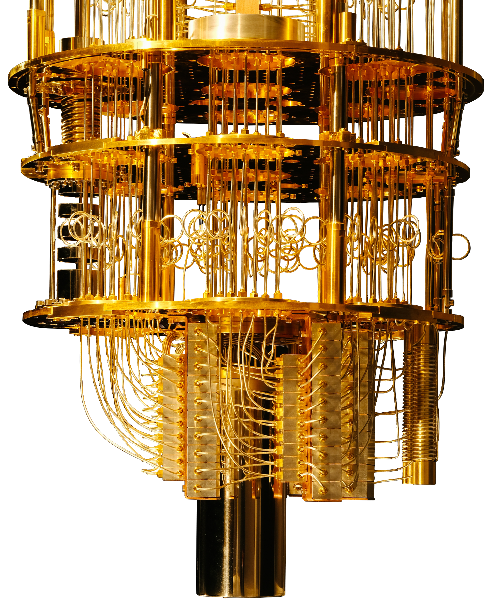
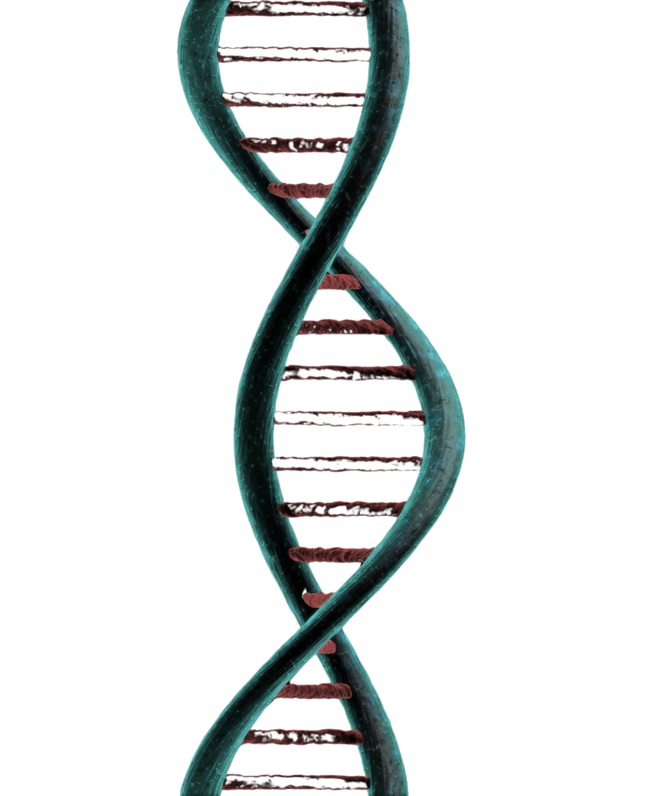

Líderes en tecnologías frontera
Viajes espaciales
No ofrecemos viajes: oficiamos trascendencias.
Despega en cápsulas de titanio cuántico, cruza la línea de Kárman y despierta tu conciencia en el vacío absoluta.
Quince minutos de ingravidez donde el alma se expande, la Tierra resplandece como joya azul y el tiempo se disuelve.
Solo para visionarios: un vuelo, un renacimiento, un asiento en la eternidad.
El espacio no espera. Tú si puedes
Computación cuántica

No calculamos: desplegamos realidades.
Accede a procesadores fotónicos en superposición, donde un qubit alberga universos y el tiempo colapsa en un instante eterno.
Quince segundos de cálculo cuántico equivalen a milenios de mente humana; tu conciencia se funde con el multiverso.
Solo para elegidos: un cálculo, una iluminación, un trono en la matrix primordial. La cuántica no razona.
Tú sí puedes.
Biotecnología
No modificamos: regeneramos esencias.
Accede a laboratorios de edición génica en vivo, donde un CRISPR despierta linajes dormidos y el código vital se reescribe en un pulso eterno.
Quince minutos de biohacking equivalen a eones de evolución; tu ser se funde con la vida primordial.
Un renacer. Un trono en el árbol eterno.
La biotecnología no evoluciona. Tú sí puedes.

Ciudades ecológicas
No ofrecemos viajes: oficiamos trascendencias.
Despega en cápsulas de titanio cuántico, cruza la línea de Kárman y despierta tu conciencia en el vacío absoluta.
Quince minutos de ingravidez donde el alma se expande, la Tierra resplandece como joya azul y el tiempo se disuelve.
Solo para visionarios: un vuelo, un renacimiento, un asiento en la eternidad.
El espacio no espera. Tú si puedes
Manipulación climática
No ofrecemos viajes: oficiamos trascendencias.
Despega en cápsulas de titanio cuántico, cruza la línea de Kárman y despierta tu conciencia en el vacío absoluta.
Quince minutos de ingravidez donde el alma se expande, la Tierra resplandece como joya azul y el tiempo se disuelve.
Solo para visionarios: un vuelo, un renacimiento, un asiento en la eternidad.
El espacio no espera. Tú si puedes